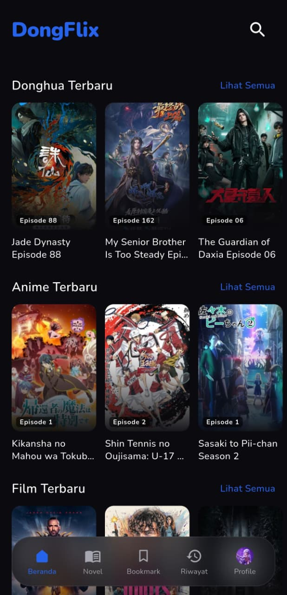
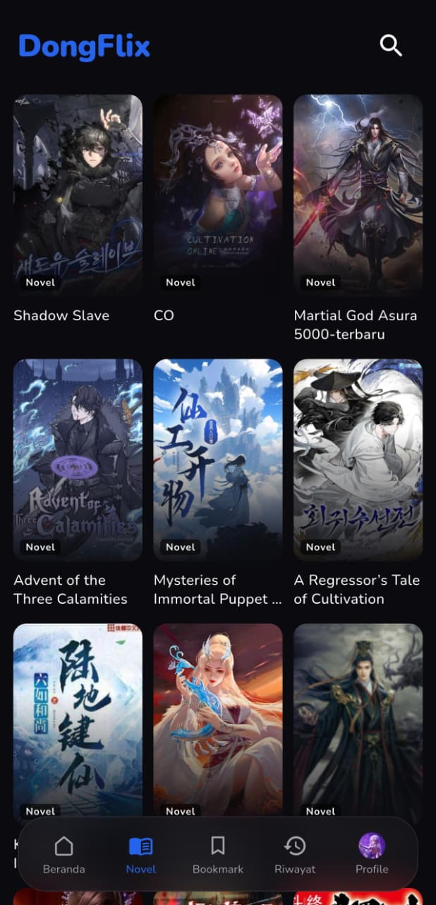
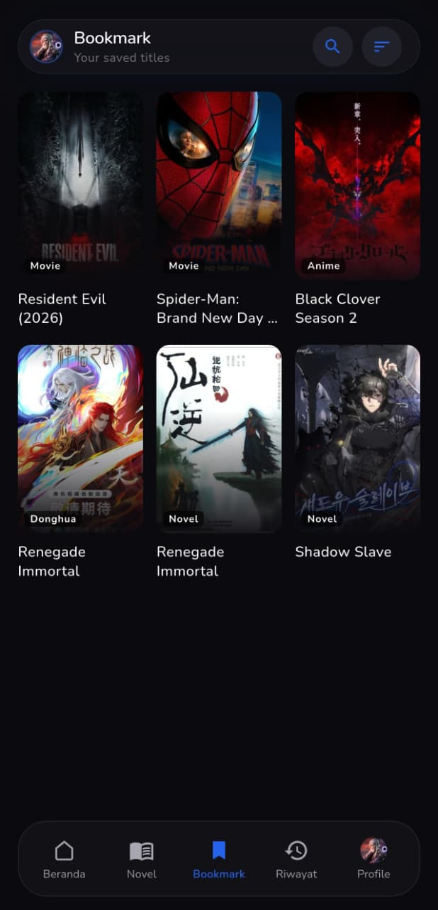
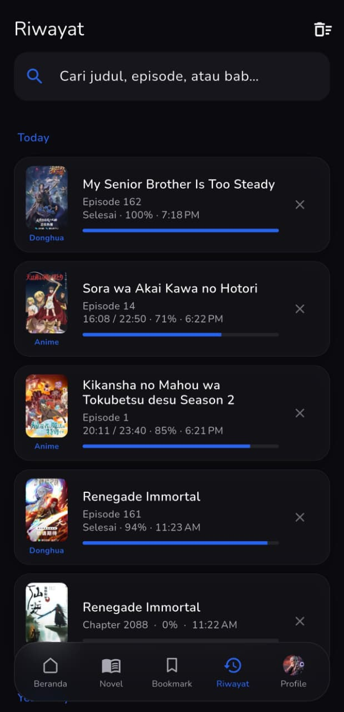
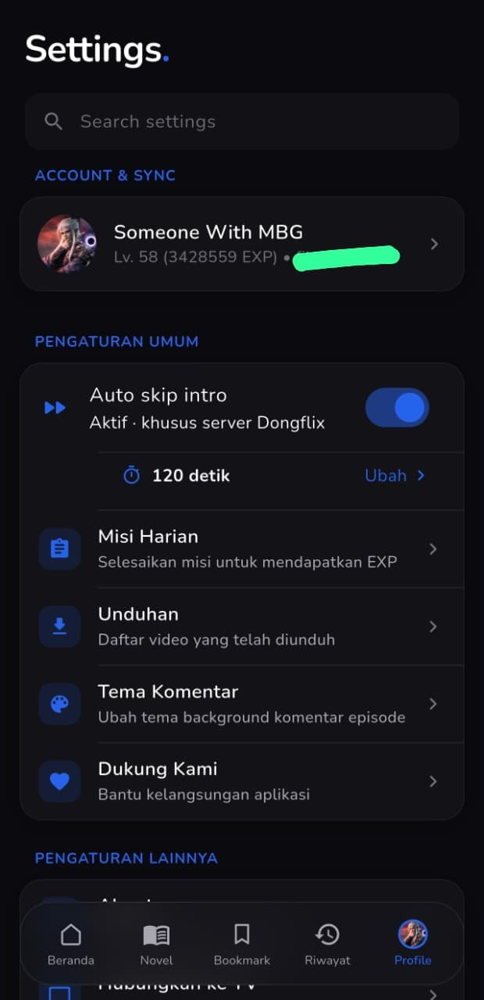
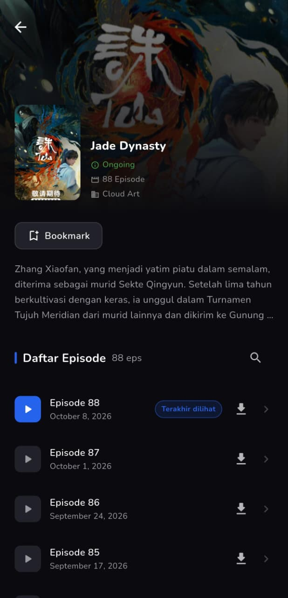
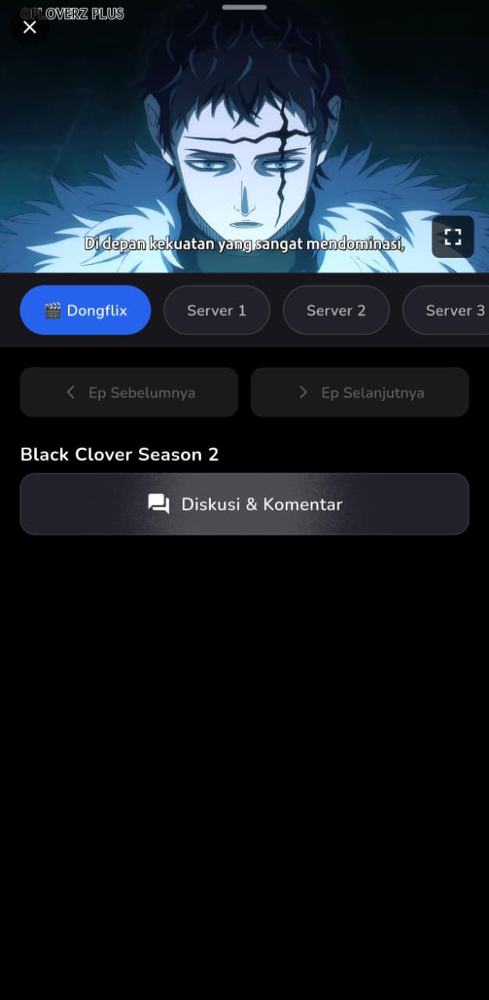
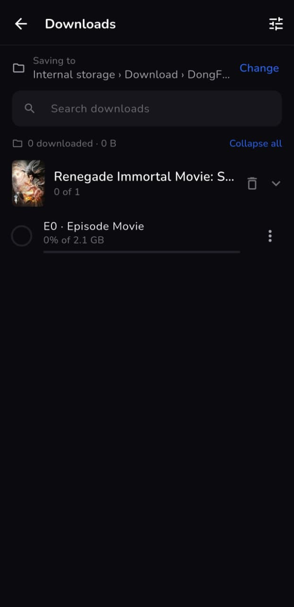
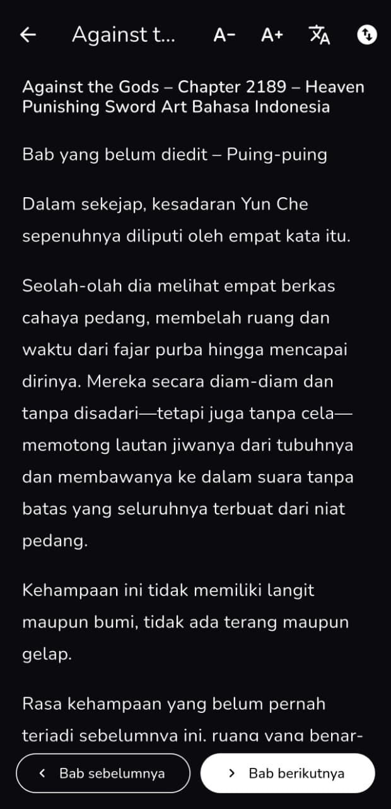

Lanjutkan tontonan
Progress episode, film, dan bab disimpan agar kamu dapat kembali ke bagian terakhir dengan cepat.
Aplikasi DongFlix
Temukan cerita favorit, lanjutkan dari progres terakhir, simpan pilihanmu, dan nikmati pengalaman menonton yang nyaman di Android, Android TV, Windows, maupun iOS.

DongFlix menyatukan fitur menonton, membaca, menyimpan progres, dan berinteraksi dengan komunitas dalam satu aplikasi.
Progress episode, film, dan bab disimpan agar kamu dapat kembali ke bagian terakhir dengan cepat.
Simpan anime, donghua, film, atau novel untuk ditonton dan dibaca nanti dari satu daftar.
Pilih server, kualitas video, subtitle, layar penuh, Picture in Picture, serta kontrol pemutaran.
Pilih kualitas video yang tersedia untuk diunduh dan lanjutkan menonton saat koneksi terbatas.
Periksa semua tontonan dan bacaan terakhir, lengkap dengan status progres atau selesai.
Cari bab, tandai bacaan terakhir, gunakan gulir otomatis, dan lanjutkan dari progres tersimpan.
Tinggalkan komentar, kunjungi profil pengguna lain, dan lihat aktivitas komunitas DongFlix.
Selesaikan aktivitas harian untuk mengumpulkan XP dan menaikkan level akunmu.
Lihat seluruh pengalaman DongFlix, dari beranda dan detail tontonan hingga riwayat, profil, dan pembaca novel.








Lengkapi hiburanmu dengan ekosistem aplikasi DongFlix untuk pengalaman terbaik di mana saja.
Aplikasi streaming musik layaknya Spotify dan YouTube Music dari ekosistem DongFlix. Dengarkan jutaan lagu dari berbagai artis favoritmu lengkap dengan lirik berjalan real-time, background play saat layar mati, playlist tanpa batas, dan sepenuhnya bebas iklan.
DongFlix dibuat untuk menghadirkan satu tempat yang nyaman untuk mengikuti berbagai cerita favoritmu.